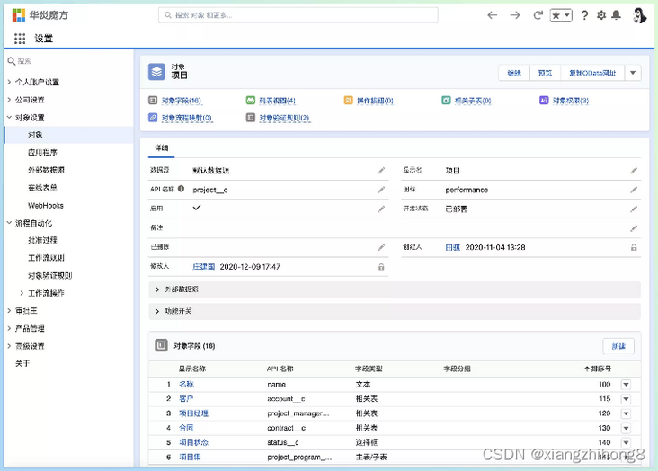

easycode
20个不错的低代码平台
近几年，在技术领域低代码是比较热门的话题，比如阿里云推出了易搭，通过简单的拖拽、配置，即可完成业务应用的搭建，腾讯云则是推出了微搭，通过行业化模板、拖放式组件和可视化配置快速构建多端应用。
低代码是基于可视化和模型驱动理念，结合云原生与多端体验技术，它能够在多数业务场景下实现大幅度的提效降本，为专业开发者提供了一种全新的高生产力开发范式。下面就来分享几个值得学习和使用的低代码开源项目，更深入地了解什么是低代码。
1，Appsmith
Appsmith 是一款开源低代码框架，主要用于构建管理面板、内部工具和仪表板等，允许拖放 UI 组件来构建页面，通过连接到任何 API、数据库或 GraphQL 源，并使用 JavaScript 语言编写逻辑，可以在短时间内创建内部应用程序。
项目链接：https://github.com/appsmithor...
2，LowCodeEngine
LowCodeEngine 由阿里巴巴钉钉宜搭团队开发的低代码框架，基于阿里云的云基础设施和钉钉的企业数字化操作系统。使用者只需要基于低代码引擎便可以快速定制符合自己业务需求的低代码平台。同时LowCodeEngine还提供了很多的基础组件，可以帮助开发者快速的构建业务页面。
项目链接：https://github.com/alibaba/lo...
3，Amis
Amis 是百度开源的一款前端低代码框架，通过 JSON 配置就能生成各种后台页面，包括数据获取、表单提交及验证等功能，同时，Amis内置 100+ 种 UI 组件，能够满足各种页面组件展现的需求，极大减少开发成本，甚至可以不需要了解前端。
amis 在百度内部得到了广泛使用，在 4 年多的时间里创建了 3w 多页面，从内容审核到机器管理，从数据分析到模型训练，amis 满足了各种各样的页面需求。我们可以下载源码，然后使用如下的命令来体验。
1 | # 安装项目 npm 依赖，在 node 12 下会有报错但不影响正常使用。 |
项目链接：https://github.com/baidu/amis
4，tmagic-editor
tmagic-editor是一款由腾讯技术中心出品的一款开源低代码框架，能够实现零代码/低代码生成页面 ， 可以快速搭建可视化页面生产平台，让非技术人员可以通过拖拽和配置，自助生成H5页面、PC页面、TV页面，大大降低页面生产成本 。
项目链接：https://gitee.com/webapp_qsr/…
5，dooring-electron-lowcode
dooring-electron-lowcode是一款功能强大，专业可靠的可视化页面配置解决方案，致力于提供一套简单方便、专业可靠、无限可能的H5落地页最佳实践。技术栈以react和typescript为主， 后台采用nodejs开发, electron作为桌面端基础方案。
和它一样的还有H5-Dooring，H5-Dooring是一款功能强大、专业可靠的H5可视化页面配置解决方案，致力于提供一套简单方便、专业可靠、无限可能的H5落地页最佳实践。技术栈以 React 和 TypeScript 为主，后台采用nodejs开发。除了 H5 版，还提供了 PC 版。
6，vite-vue3-lowcode
vite-vue3-lowcode 是一款基于Vite2.x + Vue3.x + TypeScript技术框架的的H5 低代码平台。目前只是一个简单的模板，支持数据配置的导入和导出，配置的修改和删除操作，用到的技术有sandbox 中执行自定义逻辑、monaco-editor 自定义代码补全、vue3 createRenderer 自定义渲染器等。
7，shida
shida是一个视频可视化搭建项目，开发者可以通过拖拽就可以快速地生产一个短视频，使用方式就像易企秀或百度 H5 等 h5 低代码平台一样。shida的后端视频合成部分是基于FFCreator进行开发的，FFCreator 是一个基于 node.js 的轻量、灵活的短视频加工库，只需要添加几张图片或视频片段再加一段背景音乐，就可以快速生成一个很酷的视频短片。
项目链接：https://github.com/tnfe/shida
8，quark-h5
quark-h5是一个使用Vue + Koa的前端低代码框架，和大多数的前端低代码框架一样，采用的是编辑器生成页面JSON数据，服务端负责存取JSON数据，渲染时从服务端取数据JSON交给前端模板处理。
项目链接：https://github.com/huangwei95...
9，gods-pen
码良是一个在线生成 H5 页面并提供页面管理和页面编辑的平台，用于快速制作 H5 页面。用户无需掌握复杂的编程技术，通过简单拖拽、少量配置即可制作精美的页面，可用于营销场景下的页面制作。同时，也为开发者提供了完备的编程接入能力，通过脚本和组件的形式获得强大的组件行为和交互控制能力。
项目链接：https://github.com/ymm-tech/g...
10，luban-h5
鲁班H5是基于Vue2.0开发的支持拖拽方式来快速生成页面的低代码平台，功能基本类似于易企秀、Maka、百度等H5平台。
项目链接：https://github.com/ly525/luba...
11，mometa
mometa 并不是传统主流的低代码平台（如 amis），mometa 是面向研发、代码可视设计编辑平台，更像是 dreamweaver、gui的可视编辑 工具。借助它，我们可以获得所见即所得的可视编辑开发体验。
项目链接：https://github.com/imcuttle/m...
12，h5-factory
h5-factory是专题页面可视化编辑工具，可以通过拖拽来设计页面，并且指出一键生成html文件。
项目链接：https://github.com/xuhaiqing/...
13，steedos-platform
steedos-platform是 Salesforce 低代码平台的开源替代方案，使用可视化工具进行模型设计, 页面设计, 流程设计, 报表设计，只需点击鼠标，就能快速创建应用程序，实现敏捷开发的新高度。在技术实现细节上，steedos-platform使用元数据定义对象，字段，配置，代码，逻辑和页面布局，并基于这些元数据自动生成系统的数据结构以及Steedos应用程序的用户界面和自动化逻辑。

不过，steedos-platform是一整套的低代码解决方案，如果需要单独开发或者部署需要同时具备前后端架构的能力。
项目链接：https://github.com/steedos/st...
14，lz-h5-edit
lz-h5-edit是一个H5低代码编辑平台，支持拖拽、缩放、旋转、动画、撤销、重做、组合元素等方式来创建H5页面。
项目链接：https://github.com/lzuntalent...
15，tefact
星搭开源无代码编辑器，使用图形化界面生成 网站、H5和表单，无需任何代码即可生成应用程序。
项目链接：https://github.com/staringos/...
16，fast-poster
fast-poster是一款使用Python+Vue开发的通用海报生成器，可以用来快速的生成海报。使用时知需要经过三步即可生成所需要的海报：启动服务 > 编辑海报 > 生成代码。
项目链接：https://gitee.com/vitojc/fast...
17，openDataV
OpenDataV 是一款基于Vue3 + vite + TypeScript开发前端可视化低代码平台。支持拖拽式、可视化、低代码数据可视化开发，你可以用它自由的拼接成各种炫酷的大屏，同时支持接入开发者自己开发的组件接入平台。
项目链接：https://github.com/AnsGoo/ope...
18，mall-cook
Mall-Cook 是一个基于 vue 开发的可视化商城搭建平台，包括多页面可视化构建、Json Schema 生成器（可视化搭建物料控制面板），实现组件流水线式标准接入平台。最新版本使用 uni-app 重构物料、模板项目，支持生成 H5、小程序多端商城。
项目链接：https://github.com/wangyuan38...
19，form-generator
form-generator是一个基于Element UI表单设计及代码生成器，可将生成的代码直接运行在基于Element的vue项目中，也可导出JSON表单，使用配套的解析器将JSON解析成真实的表单。
项目链接：https://github.com/JakHuang/f...
20，vjdesign
vjdesign是一款支持任何 vue 项目中的组件，不需要二次开发就可以定义支持的组件以及组件的属性，并且对组件的属性和数据的关系以及表单的交互行为也可以通过设计器配置实现。